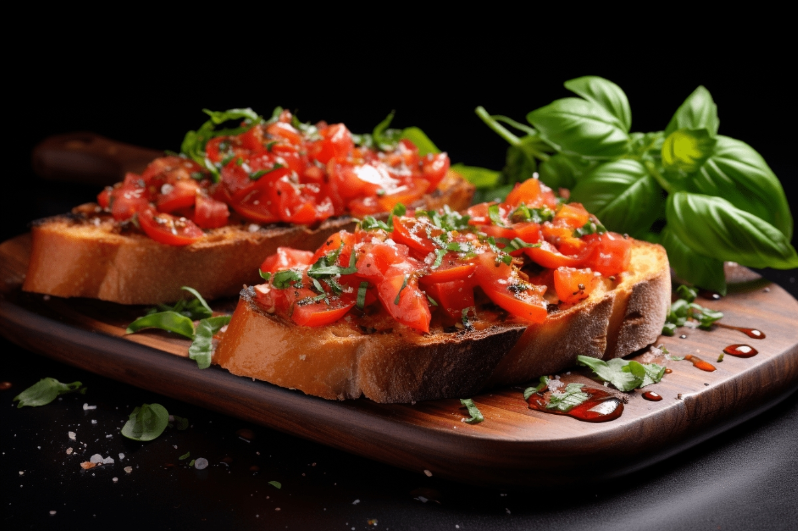

Składniki na 1 porcję
- 1 kromka pieczywa
- 1 średni pomidor
- 2 liście bazylii
- 1 łyżka oliwy z oliwek
- Szczypta soli i pieprzu
Przygotowanie
- Pokrój pomidora w drobną kostkę.
- Posiekaj bazylię na drobno.
- Pieczywo opiecz w tosterze lub na suchej patelni, aż będzie chrupiące.
- Nałóż na pieczywo mieszankę pomidora i bazylii, dopraw solą i pieprzem.
- Skrop oliwą z oliwek i podawaj od razu.